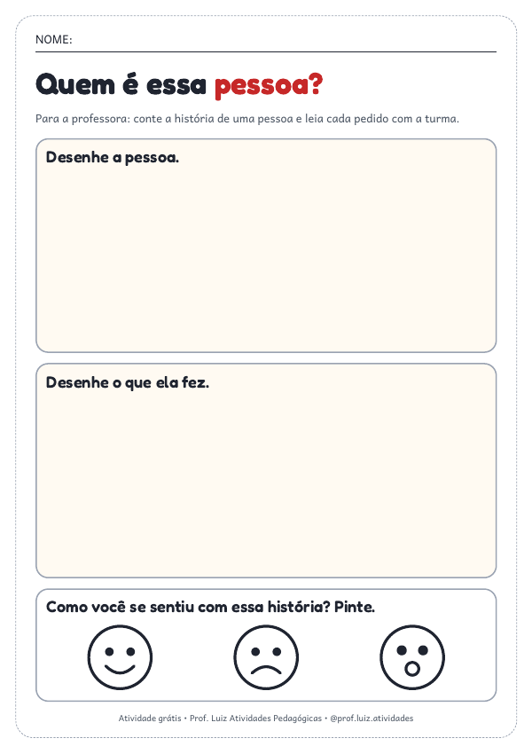
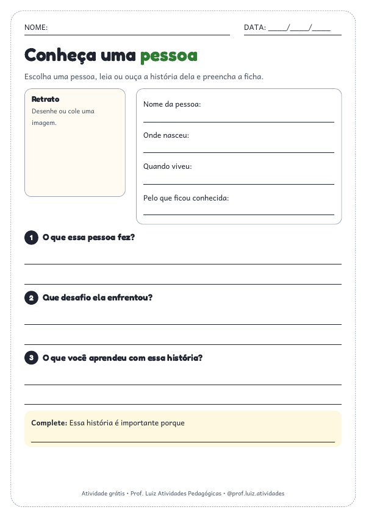
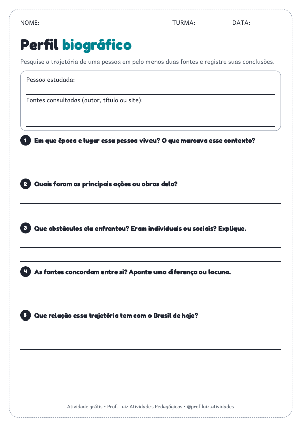

Educação Infantil
A criança ouve a história, desenha e mostra como se sentiu.
Baixar PDFEscolha a ficha da sua turma, baixe o PDF e imprima. Não pedimos nome nem WhatsApp.

A criança ouve a história, desenha e mostra como se sentiu.
Baixar PDF
Dados da pessoa, três perguntas e uma frase para completar.
Baixar PDF
Pesquisa em duas fontes, contexto histórico e relação com hoje.
Baixar PDFO Kit Consciência Negra, do 1º ao 5º ano, traz biografias de Dandara, Carolina Maria de Jesus e Luiz Gama, com perguntas e mural.
Ver a amostra do kit